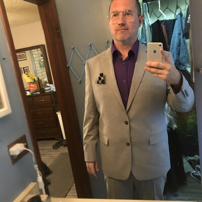

Résumé

Educator & Instructional Designer
Dedicated educator with 10+ years of classroom experience and a deep commitment to data-driven, differentiated instruction. Specializes in literacy intervention, STEM integration, and the thoughtful use of AI-adaptive learning tools to support diverse learners. Currently pursuing an Ed.D. in Instructional Design, with a foundation in Applied Learning Sciences and a track record of measurable student growth.
Open to Relocation Within the U.S.Contact
Education
Ed.D. Instructional Design
National University
In Progress
M.S. Applied Learning Sciences
University of Miami
Certifications
Professional Development
Core Skills
Work Experience
The DiSTI Corporation
2026 – Present
Instructional Designer
City Church Academy
2024 – 2026
Fifth Grade Teacher / STEM Coordinator
Volusia County Public Schools
2015 – 2024
Second Grade Teacher
Skills & Tools